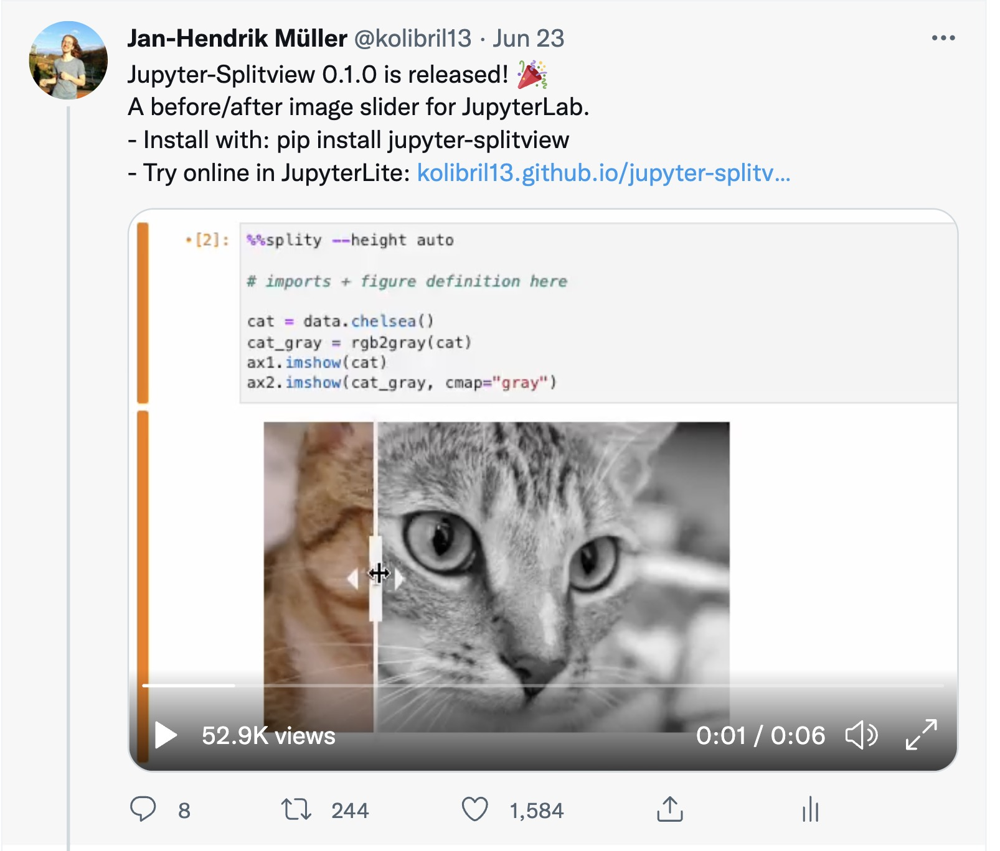

Projekte für das Python FrameWork "Jupyter"
Image-Compare
Output-Capture
Plywood Gallery
Image-Compare
Image-Compare
Reichweite: ca. 4000 Nutzer

Output-Capture
Plywood Gallery
1. Erstellen
2. Auf website verfügbar
3. Einfügen
4. weiteres Beispiel
### Zum ausprobieren: <medium> 1. https://octoframes.github.io/compare_view/ <br><br> <small> 2. https://kolibril13.github.io/further_ideas_plywood_gallery/web3_2DArray.html</small>